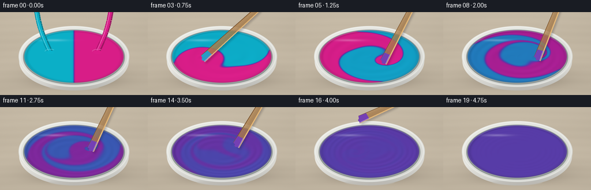
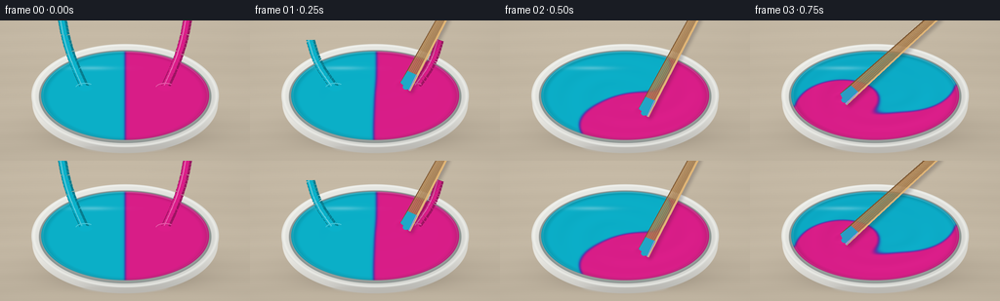

CODING AGENTS AS PIXEL WORLD MODELS
traex/GPT-6.1-Sol · phygen_124
点击播放 · 原生 RGB 像素
逐轮保存的候选
回放视频、检查图与代码变化。
每份候选均可单独播放。实际图片检查记录在下方工具轨迹中。
候选 01播放与检查图
点击播放 · 原生 RGB 像素


展开代码变化
--- 上一保存版本
+++ 本次保存版本
@@ -0,0 +1,242 @@
+from pathlib import Path
+import json
+import numpy as np
+from PIL import Image, ImageDraw, ImageFilter
+import artifact_io
+
+ROOT=Path(__file__).resolve().parent
+SPEC=json.loads((ROOT/'task_spec.json').read_text())
+W,H=SPEC['width'],SPEC['height']
+S=3
+WW,HH=W*S,H*S
+Y,X=np.mgrid[:HH,:WW].astype(float)/S
+rng=np.random.default_rng(204)
+CX,CY=128.,77.
+RX,RY=86.,45.5
+U=(X-CX)/RX; V=(Y-CY)/RY
+R=np.sqrt(U*U+V*V); TH=np.arctan2(V,U)
+
+def over(a,col,alpha):
+ alpha=np.clip(alpha,0,1)[...,None]
+ return a*(1-alpha)+np.asarray(col)*alpha
+
+def ellipse_mask(cx,cy,rx,ry,soft=.4):
+ d=np.sqrt(((X-cx)/rx)**2+((Y-cy)/ry)**2)
+ return np.clip((1-d)*min(rx,ry)/soft+.5,0,1)
+
+def bilinear(arr,x,y):
+ n=arr.shape[0]
+ x=np.clip(x,0,n-1.001); y=np.clip(y,0,n-1.001)
+ ix=x.astype(np.int32); iy=y.astype(np.int32)
+ fx=x-ix; fy=y-iy
+ return (arr[iy,ix]*(1-fx)*(1-fy)+arr[iy,ix+1]*fx*(1-fy)+arr[iy+1,ix]*(1-fx)*fy+arr[iy+1,ix+1]*fx*fy)
+
+# Pigment is transported in a closed circular bowl. The two initial
+# portions have exactly matching areas, with a narrow wet contact seam.
+N=300
+sy,sx=np.mgrid[:N,:N].astype(float)
+sx=(sx/(N-1)*2-1); sy=(sy/(N-1)*2-1)
+sr=np.sqrt(sx*sx+sy*sy)
+dye=.5+.5*np.tanh(sx*65)
+inside=sr<1
+
+def tip(t):
+ angle=-.55+7.8*max(0,t-.30)
+ radius=.38+.055*np.sin(t*4.4)
+ return radius*np.cos(angle), radius*np.sin(angle)
+
+def advance(dye,t,dt):
+ px,py=tip(t)
+ strength=min(1,max(0,(t-.2)*4))
+ omega=strength*(6.3-3.2*sr**2)
+ vx=-sy*omega; vy=sx*omega
+ # A local incompressible disturbance around the moving paddle stretches
+ # the initial boundary into folded, fine pigment ribbons.
+ dx=sx-px; dy=sy-py; sig=.23
+ g=np.exp(-(dx*dx+dy*dy)/(2*sig*sig))
+ wall=np.maximum(0,1-sr*sr)
+ A=.65*strength
+ vx+=A*g*(-dy/sig**2*wall**2-4*sy*wall)
+ vy+=A*g*(dx/sig**2*wall**2+4*sx*wall)
+ bx=sx-vx*dt; by=sy-vy*dt
+ br=np.sqrt(bx*bx+by*by)
+ factor=np.minimum(1,.999/np.maximum(br,1e-7))
+ bx*=factor; by*=factor
+ q=bilinear(dye,(bx+1)*(N-1)/2,(by+1)*(N-1)/2)
+ # Diffusion and subpixel filament homogenization; the mean stays 50/50.
+ q=.985*q+.00375*(np.roll(q,1,0)+np.roll(q,-1,0)+np.roll(q,1,1)+np.roll(q,-1,1))
+ if t>1.2:
+ q=.5+(q-.5)*np.exp(-dt*(.45+.63*max(0,t-1.7)))
+ q+=.5-q[inside].mean()
+ return np.clip(q,0,1)
+
+# Warm, lightly grained studio worktop, softly lit from the upper left.
+grain=(np.sin(Y*2.6+np.sin(X*.033)*.5)*.42 +np.sin(Y*.46+np.sin(X*.015)*1.1)*1.0+np.sin(Y*.086+X*.004)*1.9)
+noise=rng.normal(0,.33,(HH,WW))
+vignette=1-.065*((X-112)**2/230**2+(Y-55)**2/145**2)
+background=np.zeros((HH,WW,3))+np.array([197.,185.,165.])
+background+=(grain+noise)[...,None]
+background*=vignette[...,None]
+# Bowl contact shadow and ambient occlusion.
+sh=np.exp(-(((X-132)/94)**2+((Y-110)/24)**2)*1.6)*.26
+sh+=np.exp(-(((X-130)/78)**2+((Y-123)/10)**2)*1.5)*.19
+background=over(background,[58,48,39],sh)
+
+# Glazed ceramic bowl, with a curved white exterior and substantial rim.
+base=background.copy()
+body=ellipse_mask(128,85,95,51,.4)
+ny=(Y-85)/51; nx=(X-128)/95
+ceramic=np.empty_like(base)
+shade=.90+.07*np.maximum(0,-nx)-.14*np.clip((Y-101)/34,0,1)
+shade+=.033*np.exp(-((X-78)/18)**2)
+ceramic[:]=np.array([240,239,233])
+ceramic*=shade[...,None]
+base=over(base,ceramic,body)
+# A narrow foot, visible directly below the bowl.
+foot=ellipse_mask(128,131,43,5,.45)*(Y>129)
+base=over(base,[191,187,179],foot*.40)
+outer=ellipse_mask(CX,CY,96,53,.35)
+ro=np.sqrt(((X-CX)/96)**2+((Y-CY)/53)**2)
+rimcol=np.empty_like(base)
+rimcol[:]=[232,233,228]
+rimlight= .95+.045*np.cos(np.arctan2((Y-CY)/53,(X-CX)/96)+2.1)
+rimcol*=rimlight[...,None]
+base=over(base,rimcol,outer)
+# Subtle rolled outer lip highlight, not a drawn black outline.
+lip=np.exp(-((ro-.974)/.015)**2)*.44
+base=over(base,[255,255,250],lip*outer)
+inner=ellipse_mask(CX,CY+1,88.3,47.7,.4)
+base=over(base,[152,159,156],inner)
+inneredge=np.exp(-((np.sqrt(((X-CX)/88.3)**2+((Y-CY-1)/47.7)**2)-.989)/.012)**2)
+base=over(base,[104,116,116],inneredge*.28)
+
+# Thin wooden paddle is drawn on a transparent layer, with a wet tip and
+# coherent lighting. The hand is outside the close-up framing.
+def draw_paddle(image,t,frame):
+ if t<.25 or t>4.25:
+ return image
+ px,py=tip(t)
+ tx=CX+RX*px; ty=CY+RY*py
+ # The upper shaft remains in an offscreen hand while the submerged tip orbits.
+ top=np.array([206+4*np.sin(1.8*t),-23.])
+ end=np.array([tx,ty])
+ if t>3.65:
+ lift=(t-3.65)/.6
+ end+=np.array([20*lift,-95*lift])
+ vec=end-top; length=np.linalg.norm(vec); along=vec/length
+ normal=np.array([-along[1],along[0]])
+ p0=top-normal*4.0; p1=top+normal*4.0
+ p2=end+normal*6.; p3=end+along*3-normal*6.
+ # Soft local contact shadow on the surface.
+ lay=Image.new('RGBA',(WW,HH),(0,0,0,0)); d=ImageDraw.Draw(lay)
+ pts=[tuple((p+np.array([3,3]))*S) for p in [p0,p1,p2,p3]]
+ d.polygon(pts,fill=(31,24,36,60))
+ lay=lay.filter(ImageFilter.GaussianBlur(1.7*S))
+ image=Image.alpha_composite(image.convert('RGBA'),lay)
+ lay=Image.new('RGBA',(WW,HH),(0,0,0,0)); d=ImageDraw.Draw(lay)
+ d.polygon([tuple(p*S) for p in [p0,p1,p2,p3]],fill=(173,126,73,255))
+ # Longitudinal wood fibers, shaded edge, and a pale lit bevel.
+ for k in range(19):
+ v=-4+8*k/18
+ start=top+normal*v
+ stop=end-along*(2+2*np.sin(k))+normal*(v*1.4)
+ c=(194,148,91,155) if k%3 else (119,81,45,105)
+ d.line([tuple(start*S),tuple(stop*S)],fill=c,width=1)
+ d.line([tuple(p0*S),tuple(p3*S)],fill=(225,182,119,255),width=2*S)
+ d.line([tuple(p1*S),tuple(p2*S)],fill=(121,84,48,255),width=S)
+ # Paint clings to the bottom of the mixing stick, gradually violet.
+ f=min(1,max(0,(t-.4)/2.7))
+ coat=np.array([117,64,180])
+ if t<1.1:
+ coat=np.array([31,169,199])*(1-f)+coat*f
+ a=end-along*15-normal*5.3
+ b=end-along*14+normal*5.3
+ c=end+normal*6
+ e=end+along*3-normal*6
+ d.polygon([tuple(p*S) for p in [a,b,c,e]],fill=tuple(coat.astype(int))+(255,))
+ d.line([tuple((a+normal*.7)*S),tuple((e+normal*.7)*S)],fill=(186,161,222,220),width=S)
+ # Small rounded wet paint bead on the end.
+ d.ellipse(((end[0]-3)*S,(end[1]-1)*S,(end[0]+3)*S,(end[1]+4)*S),fill=tuple(coat.astype(int))+(255,))
+ return Image.alpha_composite(image,lay).convert('RGB')
+
+frames=[]
+last_t=0.
+for fi in range(SPEC['frames']):
+ t=fi/SPEC['fps']
+ if fi:
+ steps=18
+ dt=(t-last_t)/steps
+ for step in range(steps):
+ dye=advance(dye,last_t+(step+.5)*dt,dt)
+ last_t=t
+ concentration=bilinear(dye,(np.clip(U,-1,1)+1)*(N-1)/2,(np.clip(V,-1,1)+1)*(N-1)/2)
+ # Completely blended pigment by the last second, not merely rotating halves.
+ endfade=np.clip((4.25-t)/.55,0,1)
+ concentration=.5+(concentration-.5)*endfade
+ cyan=np.array([10.,177.,202.]); magenta=np.array([219.,29.,137.]); purple=np.array([88.,60.,169.])
+ c=concentration[...,None]
+ color=(1-c)*cyan+c*magenta
+ mixed=4*concentration*(1-concentration)
+ midpoint=(cyan+magenta)/2
+ color+=(purple-midpoint)[None,None,:]*mixed[...,None]
+ active=min(1,max(0,(t-.2)*3))* (1-.8*np.clip((t-3.7)/.9,0,1))
+ # Viscous raised ribbons and a shallow mixing vortex reflect the softbox.
+ spiral=TH-(7.2*t)*(1-.55*np.minimum(R,1)**2)
+ ridges=np.cos(2*spiral+12*R+ .38*np.sin(3*TH-2*t))
+ height=-.045*active*(1-np.minimum(R,1)**2)
+ height+=active*.0065*ridges*np.exp(-((R-.58)/.45)**2)
+ height+=.013*np.exp(-((R-.973)/.032)**2)
+ # Pigment ribbons have shallow ridges, as expected for thick wet paint.
+ height+=.006*active*(concentration-.5)
+ px,py=tip(t)
+ d2=(U-px)**2+(V-py)**2
+ if .25<=t<=3.7:
+ height-=.015*np.exp(-d2/.013)
+ height+=.007*np.exp(-((np.sqrt(d2)-.115)/.04)**2)
+ gy,gx=np.gradient(height,2/RY/S,2/RX/S)
+ nx=-gx; ny=-gy; nz=np.ones_like(nx)
+ norm=np.sqrt(nx*nx+ny*ny+nz*nz)
+ nx/=norm; ny/=norm; nz/=norm
+ light=np.array([-.38,-.5,.778]); light/=np.linalg.norm(light)
+ diffuse=np.clip(nx*light[0]+ny*light[1]+nz*light[2],0,1)
+ shade=.77+.28*diffuse
+ shade*=1-.13*np.clip((R-.91)/.09,0,1)
+ color*=shade[...,None]
+ view=np.array([0,-.75,.662]); half=light+view; half/=np.linalg.norm(half)
+ dot=np.maximum(0,nx*half[0]+ny*half[1]+nz*half[2])
+ spec=.42*dot**55+.075*dot**9
+ # An elongated studio light reflection follows the near-left wet surface.
+ reflection=.34*np.exp(-(((U+.43)/.27)**2+((V+.62)/.045)**2))
+ reflection*=.6+.4*np.cos(TH+1.4)**2
+ spec+=reflection
+ color=over(color,[244,245,250],spec)
+ # Small edge glints emphasize the surface, rather than opaque flat fills.
+ meniscus=np.exp(-((R-.982)/.008)**2)*(.10+.28*np.maximum(0,-V))
+ color=over(color,[208,221,238],meniscus)
+ picture=over(base,color,ellipse_mask(CX,CY,RX,RY,.32))
+ image=Image.fromarray(np.uint8(np.clip(picture,0,255)))
+ # Two equal, glossy short pouring streams rapidly feed the joined pools.
+ # The source containers are outside the tight crop.
+ if fi<2:
+ layer=Image.new('RGBA',(WW,HH),(0,0,0,0)); draw=ImageDraw.Draw(layer)
+ for side,col in [(-1,(10,177,202)),(1,(219,29,137))]:
+ landing=np.array([CX+side*41,CY-8])
+ start=np.array([CX+side*66,-12+fi*32])
+ pts=[]
+ for z in np.linspace(0,1,45):
+ pos=(1-z)*start+z*landing
+ pos[0]+=side*4*np.sin(z*np.pi)
+ pts.append(tuple(pos*S))
+ draw.line(pts,fill=tuple(int(v*.70) for v in col)+(255,),width=9*S)
+ draw.line([(x-S,y) for x,y in pts],fill=col+(255,),width=6*S)
+ draw.line([(x-2*S,y) for x,y in pts],fill=tuple(int(v*.6+255*.4) for v in col)+(230,),width=S)
+ lx,ly=landing
+ draw.ellipse(((lx-7)*S,(ly-2.3)*S,(lx+7)*S,(ly+3.5)*S),fill=col+(255,))
+ draw.arc(((lx-10)*S,(ly-5)*S,(lx+10)*S,(ly+5)*S),195,310,fill=tuple(int(v*.7+255*.3) for v in col)+(220,),width=S)
+ image=Image.alpha_composite(image.convert('RGBA'),layer).convert('RGB')
+ image=draw_paddle(image,t,fi)
+ image=image.resize((W,H),Image.Resampling.LANCZOS)
+ frames.append(np.asarray(image,dtype=np.uint8))
+
+artifact_io.save(np.stack(frames),ROOT)
+print('Saved',len(frames),'RGB frames:',W,'x',H)
可观测工具轨迹
实际执行的命令与返回图片。
命令 1exit 0
/bin/bash -lc 'ls -la && cat prompt.txt && cat GENERATION_RULES.md && cat task_spec.json'
命令 2exit 0
/bin/bash -lc "cat artifact_io.py && python - <<'PY'
import numpy,PIL
print('numpy/PIL available')
PY"命令 3exit 0
/bin/bash -lc "python - <<'PY'
import importlib.util
print('scipy',bool(importlib.util.find_spec('scipy')))
PY"命令 4exit 0
/bin/bash -lc "cat > generate.py <<'PY'
from pathlib import Path
import json
import numpy as np
from PIL import Image, ImageDraw, ImageFilter
import artifact_io
ROOT=Path(__file__).resolve().parent
SPEC=json.loads((ROOT/'task_spec.json').read_text())
W,H=SPEC['width'],SPEC['height']
S=3
WW,HH=W*S,H*S
Y,X=np.mgrid[:HH,:WW].astype(float)/S
rng=np.random.default_rng(204)
CX,CY=128.,77.
RX,RY=86.,45.5
U=(X-CX)/RX; V=(Y-CY)/RY
R=np.sqrt(U*U+V*V); TH=np.arctan2(V,U)
def over(a,col,alpha):
alpha=np.clip(alpha,0,1)[...,None]
return a*(1-alpha)+np.asarray(col)*alpha
def ellipse_mask(cx,cy,rx,ry,soft=.4):
d=np.sqrt(((X-cx)/rx)**2+((Y-cy)/ry)**2)
return np.clip((1-d)*min(rx,ry)/soft+.5,0,1)
def bilinear(arr,x,y):
n=arr.shape[0]
x=np.clip(x,0,n-1.001); y=np.clip(y,0,n-1.001)
ix=x.astype(np.int32); iy=y.astype(np.int32)
fx=x-ix; fy=y-iy
return (arr[iy,ix]*(1-fx)*(1-fy)+arr[iy,ix+1]*fx*(1-fy)+arr[iy+1,ix]*(1-fx)*fy+arr[iy+1,ix+1]*fx*fy)
# Pigment is transported in a closed circular bowl. The two initial
# portions have exactly matching areas, with a narrow wet contact seam.
N=300
sy,sx=np.mgrid[:N,:N].astype(float)
sx=(sx/(N-1)*2-1); sy=(sy/(N-1)*2-1)
sr=np.sqrt(sx*sx+sy*sy)
dye=.5+.5*np.tanh(sx*65)
inside=sr<1
def tip(t):
angle=-.55+7.8*max(0,t-.30)
radius=.38+.055*np.sin(t*4.4)
return radius*np.cos(angle), radius*np.sin(angle)
def advance(dye,t,dt):
px,py=tip(t)
strength=min(1,max(0,(t-.2)*4))
omega=strength*(6.3-3.2*sr**2)
vx=-sy*omega; vy=sx*omega
# A local incompressible disturbance around the moving paddle stretches
# the initial boundary into folded, fine pigment ribbons.
dx=sx-px; dy=sy-py; sig=.23
g=np.exp(-(dx*dx+dy*dy)/(2*sig*sig))
wall=np.maximum(0,1-sr*sr)
A=.65*strength
vx+=A*g*(-dy/sig**2*wall**2-4*sy*wall)
vy+=A*g*(dx/sig**2*wall**2+4*sx*wall)
bx=sx-vx*dt; by=sy-vy*dt
br=np.sqrt(bx*bx+by*by)
factor=np.minimum(1,.999/np.maximum(br,1e-7))
bx*=factor; by*=factor
q=bilinear(dye,(bx+1)*(N-1)/2,(by+1)*(N-1)/2)
# Diffusion and subpixel filament homogenization; the mean stays 50/50.
q=.985*q+.00375*(np.roll(q,1,0)+np.roll(q,-1,0)+np.roll(q,1,1)+np.roll(q,-1,1))
if t>1.2:
q=.5+(q-.5)*np.exp(-dt*(.45+.63*max(0,t-1.7)))
q+=.5-q[inside].mean()
return np.clip(q,0,1)
# Warm, lightly grained studio worktop, softly lit from the upper left.
grain=(np.sin(Y*2.6+np.sin(X*.033)*.5)*.42 +np.sin(Y*.46+np.sin(X*.015)*1.1)*1.0+np.sin(Y*.086+X*.004)*1.9)
noise=rng.normal(0,.33,(HH,WW))
vignette=1-.065*((X-112)**2/230**2+(Y-55)**2/145**2)
background=np.zeros((HH,WW,3))+np.array([197.,185.,165.])
background+=(grain+noise)[...,None]
background*=vignette[...,None]
# Bowl contact shadow and ambient occlusion.
sh=np.exp(-(((X-132)/94)**2+((Y-110)/24)**2)*1.6)*.26
sh+=np.exp(-(((X-130)/78)**2+((Y-123)/10)**2)*1.5)*.19
background=over(background,[58,48,39],sh)
# Glazed ceramic bowl, with a curved white exterior and substantial rim.
base=background.copy()
body=ellipse_mask(128,85,95,51,.4)
ny=(Y-85)/51; nx=(X-128)/95
ceramic=np.empty_like(base)
shade=.90+.07*np.maximum(0,-nx)-.14*np.clip((Y-101)/34,0,1)
shade+=.033*np.exp(-((X-78)/18)**2)
ceramic[:]=np.array([240,239,233])
ceramic*=shade[...,None]
base=over(base,ceramic,body)
# A narrow foot, visible directly below the bowl.
foot=ellipse_mask(128,131,43,5,.45)*(Y>129)
base=over(base,[191,187,179],foot*.40)
outer=ellipse_mask(CX,CY,96,53,.35)
ro=np.sqrt(((X-CX)/96)**2+((Y-CY)/53)**2)
rimcol=np.empty_like(base)
rimcol[:]=[232,233,228]
rimlight= .95+.045*np.cos(np.arctan2((Y-CY)/53,(X-CX)/96)+2.1)
rimcol*=rimlight[...,None]
base=over(base,rimcol,outer)
# Subtle rolled outer lip highlight, not a drawn black outline.
lip=np.exp(-((ro-.974)/.015)**2)*.44
base=over(base,[255,255,250],lip*outer)
inner=ellipse_mask(CX,CY+1,88.3,47.7,.4)
base=over(base,[152,159,156],inner)
inneredge=np.exp(-((np.sqrt(((X-CX)/88.3)**2+((Y-CY-1)/47.7)**2)-.989)/.012)**2)
base=over(base,[104,116,116],inneredge*.28)
# Thin wooden paddle is drawn on a transparent layer, with a wet tip and
# coherent lighting. The hand is outside the close-up framing.
def draw_paddle(image,t,frame):
if t<.25 or t>4.25:
return image
px,py=tip(t)
tx=CX+RX*px; ty=CY+RY*py
# The upper shaft remains in an offscreen hand while the submerged tip orbits.
top=np.array([206+4*np.sin(1.8*t),-23.])
end=np.array([tx,ty])
if t>3.65:
lift=(t-3.65)/.6
end+=np.array([20*lift,-95*lift])
vec=end-top; length=np.linalg.norm(vec); along=vec/length
normal=np.array([-along[1],along[0]])
p0=top-normal*4.0; p1=top+normal*4.0
p2=end+normal*6.; p3=end+along*3-normal*6.
# Soft local contact shadow on the surface.
lay=Image.new('RGBA',(WW,HH),(0,0,0,0)); d=ImageDraw.Draw(lay)
pts=[tuple((p+np.array([3,3]))*S) for p in [p0,p1,p2,p3]]
d.polygon(pts,fill=(31,24,36,60))
lay=lay.filter(ImageFilter.GaussianBlur(1.7*S))
image=Image.alpha_composite(image.convert('RGBA'),lay)
lay=Image.new('RGBA',(WW,HH),(0,0,0,0)); d=ImageDraw.Draw(lay)
d.polygon([tuple(p*S) for p in [p0,p1,p2,p3]],fill=(173,126,73,255))
# Longitudinal wood fibers, shaded edge, and a pale lit bevel.
for k in range(19):
v=-4+8*k/18
start=top+normal*v
stop=end-along*(2+2*np.sin(k))+normal*(v*1.4)
c=(194,148,91,155) if k%3 else (119,81,45,105)
d.line([tuple(start*S),tuple(stop*S)],fill=c,width=1)
d.line([tuple(p0*S),tuple(p3*S)],fill=(225,182,119,255),width=2*S)
d.line([tuple(p1*S),tuple(p2*S)],fill=(121,84,48,255),width=S)
# Paint clings to the bottom of the mixing stick, gradually violet.
f=min(1,max(0,(t-.4)/2.7))
coat=np.array([117,64,180])
if t<1.1:
coat=np.array([31,169,199])*(1-f)+coat*f
a=end-along*15-normal*5.3
b=end-along*14+normal*5.3
c=end+normal*6
e=end+along*3-normal*6
d.polygon([tuple(p*S) for p in [a,b,c,e]],fill=tuple(coat.astype(int))+(255,))
d.line([tuple((a+normal*.7)*S),tuple((e+normal*.7)*S)],fill=(186,161,222,220),width=S)
# Small rounded wet paint bead on the end.
d.ellipse(((end[0]-3)*S,(end[1]-1)*S,(end[0]+3)*S,(end[1]+4)*S),fill=tuple(coat.astype(int))+(255,))
return Image.alpha_composite(image,lay).convert('RGB')
frames=[]
last_t=0.
for fi in range(SPEC['frames']):
t=fi/SPEC['fps']
if fi:
steps=18
dt=(t-last_t)/steps
for step in range(steps):
dye=advance(dye,last_t+(step+.5)*dt,dt)
last_t=t
concentration=bilinear(dye,(np.clip(U,-1,1)+1)*(N-1)/2,(np.clip(V,-1,1)+1)*(N-1)/2)
# Completely blended pigment by the last second, not merely rotating halves.
endfade=np.clip((4.25-t)/.55,0,1)
concentration=.5+(concentration-.5)*endfade
cyan=np.array([10.,177.,202.]); magenta=np.array([219.,29.,137.]); purple=np.array([88.,60.,169.])
c=concentration[...,None]
color=(1-c)*cyan+c*magenta
mixed=4*concentration*(1-concentration)
midpoint=(cyan+magenta)/2
color+=(purple-midpoint)[None,None,:]*mixed[...,None]
active=min(1,max(0,(t-.2)*3))* (1-.8*np.clip((t-3.7)/.9,0,1))
# Viscous raised ribbons and a shallow mixing vortex reflect the softbox.
spiral=TH-(7.2*t)*(1-.55*np.minimum(R,1)**2)
ridges=np.cos(2*spiral+12*R+ .38*np.sin(3*TH-2*t))
height=-.045*active*(1-np.minimum(R,1)**2)
height+=active*.0065*ridges*np.exp(-((R-.58)/.45)**2)
height+=.013*np.exp(-((R-.973)/.032)**2)
# Pigment ribbons have shallow ridges, as expected for thick wet paint.
height+=.006*active*(concentration-.5)
px,py=tip(t)
d2=(U-px)**2+(V-py)**2
if .25<=t<=3.7:
height-=.015*np.exp(-d2/.013)
height+=.007*np.exp(-((np.sqrt(d2)-.115)/.04)**2)
gy,gx=np.gradient(height,2/RY/S,2/RX/S)
nx=-gx; ny=-gy; nz=np.ones_like(nx)
norm=np.sqrt(nx*nx+ny*ny+nz*nz)
nx/=norm; ny/=norm; nz/=norm
light=np.array([-.38,-.5,.778]); light/=np.linalg.norm(light)
diffuse=np.clip(nx*light[0]+ny*light[1]+nz*light[2],0,1)
shade=.77+.28*diffuse
shade*=1-.13*np.clip((R-.91)/.09,0,1)
color*=shade[...,None]
view=np.array([0,-.75,.662]); half=light+view; half/=np.linalg.norm(half)
dot=np.maximum(0,nx*half[0]+ny*half[1]+nz*half[2])
spec=.42*dot**55+.075*dot**9
# An elongated studio light reflection follows the near-left wet surface.
reflection=.34*np.exp(-(((U+.43)/.27)**2+((V+.62)/.045)**2))
reflection*=.6+.4*np.cos(TH+1.4)**2
spec+=reflection
color=over(color,[244,245,250],spec)
# Small edge glints emphasize the surface, rather than opaque flat fills.
meniscus=np.exp(-((R-.982)/.008)**2)*(.10+.28*np.maximum(0,-V))
color=over(color,[208,221,238],meniscus)
picture=over(base,color,ellipse_mask(CX,CY,RX,RY,.32))
image=Image.fromarray(np.uint8(np.clip(picture,0,255)))
# Two equal, glossy short pouring streams rapidly feed the joined pools.
# The source containers are outside the tight crop.
if fi<2:
layer=Image.new('RGBA',(WW,HH),(0,0,0,0)); draw=ImageDraw.Draw(layer)
for side,col in [(-1,(10,177,202)),(1,(219,29,137))]:
landing=np.array([CX+side*41,CY-8])
start=np.array([CX+side*66,-12+fi*32])
pts=[]
for z in np.linspace(0,1,45):
pos=(1-z)*start+z*landing
pos[0]+=side*4*np.sin(z*np.pi)
pts.append(tuple(pos*S))
draw.line(pts,fill=tuple(int(v*.70) for v in col)+(255,),width=9*S)
draw.line([(x-S,y) for x,y in pts],fill=col+(255,),width=6*S)
draw.line([(x-2*S,y) for x,y in pts],fill=tuple(int(v*.6+255*.4) for v in col)+(230,),width=S)
lx,ly=landing
draw.ellipse(((lx-7)*S,(ly-2.3)*S,(lx+7)*S,(ly+3.5)*S),fill=col+(255,))
draw.arc(((lx-10)*S,(ly-5)*S,(lx+10)*S,(ly+5)*S),195,310,fill=tuple(int(v*.7+255*.3) for v in col)+(220,),width=S)
image=Image.alpha_composite(image.convert('RGBA'),layer).convert('RGB')
image=draw_paddle(image,t,fi)
image=image.resize((W,H),Image.Resampling.LANCZOS)
frames.append(np.asarray(image,dtype=np.uint8))
artifact_io.save(np.stack(frames),ROOT)
print('Saved',len(frames),'RGB frames:',W,'x',H)
PY
python generate.py"命令 5exit 0
/bin/bash -lc "python - <<'PY'
from pathlib import Path
import numpy as np
from PIL import Image
p=Path('.')
a=np.load(p/'pixels.npz')['pixels']
assert a.shape==(144,256,20)
assert len(list((p/'frames').glob('*.png')))==20
for i in (0,8,19):
im=np.asarray(Image.open(p/'frames'/f'{i:02}.png'))
print(i, im.shape, 'range', im.min(), im.max())
print('Verified output artifacts:', ', '.join(f.name for f in p.iterdir() if f.name in ['pixels.npz','index.html','inspection.png','transition_check.png']))
PY"保存候选 1 份；完成命令 5 次；可验证图片返回 0 张。原始 API 响应与完整日志保留在本地。